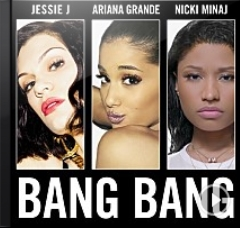
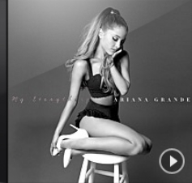

1. Almost Is Never Enough

2. Bang Bang
2. Bang Bang

3. Problem
3. Problem

4. Side To Side
5. Be Alright
[Iggy:]
Uh huh, its Iggy Iggz
I got one more problem with you girl
Aye
[Ariana:]
Hey Baby even though I hate ya
I wanna love ya
I want you you you
And even though I cant forgive ya
I really want to
I want you you you
Tell me, tell me baby
Why cant you leave me
Cause even though I shouldnt want it
I gotta have it
I want you you you
Head in the clouds
got no weight on my shoulders
I should be wiser
and realise that Ive got
[Big Sean:]
One less problem without ya
I got one less problem without ya
I got one less problem without ya
I got one less, one less problem
One less problem without ya
I got one less problem without ya
I got one less problem without ya
I got one less, one less problem
[Ariana:]
I know your never gonna wake up
I gotta give up
But its you you you
I know I shouldnt ever call back
Or let you come back
But its you you you
Every time you touch me
And say you love me
I get a little bit breathless
I shouldnt want it
But its you you you
Head in the clouds
got no weight on my shoulders
I should be wiser
and realise that Ive got
[Big Sean:]
One less problem without ya
I got one less problem without ya
I got one less problem without ya
I got one less, one less problem
One less problem without ya
I got one less problem without ya
I got one less problem without ya
I got one less, one less problem
[Iggy:]
Its Iggy Iggz, uh
What you got?
Smart money bettin
Ill be better off without you
In no time
Ill be forgettin all about you
You saying that you know
But I really really doubt you
Understand my life is easy
When I aint around you
Iggy Iggy
Too biggie to be here stressing
Im think I love the thought go you
More than I love your presence
And the best thing now
Is probably for you to exit
I let you go
Let you back
I finally learned my lesson
No half-stepping
Either you want it or you just keep playin
Im listening to you knowin
I cant believe what youre sayin
Theres a million yous baby boy
So dont be dumb
I got 99 problems
But you wont be one
Like what!
[Ariana:]
One less, one less problem
One less, one less problem
Head in the clouds
got no weight on my shoulders
I should be wiser
and realise that Ive got
[Big Sean:]
One less problem without ya
I got one less problem without ya
I got one less problem without ya
I got one less, one less problem
One less problem without ya
I got one less problem without ya
I got one less problem without ya
I got one less, one less problem
[x2]